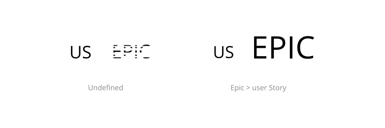
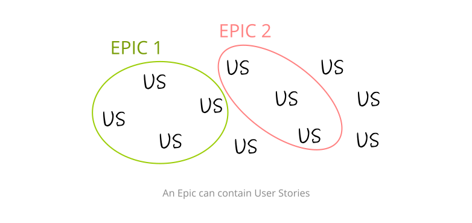

What's an epic?
Q. What is an Epic?
A. If you work with agile methodologies, you’ve probably heard of Epics. There is no official definition of an Epic, although the research made by the Taiga team detected a common sense of what an Epic Story could look like.
Q. What is the difference between an Epic and a User Story
A. Essentially, an Epic is a larger object than a User Story and can contain several of them. When defining your backlog, you will often recognize an Epic when:
- The User Story is too complex and the definition is diffuse.
- The User Story is so big that cannot be done in a considerable amount of time.
- It is very useful for strategic planning.
- An Epic usually has a diffuse definition, and can contain several features.
- An Epic is a good information container for all the team instead of creating User Stories belonging to single roles.

In this cases, it probably means that this object can be broken down to smaller stories that are features themselves.

Q. Can Epic Stories reference other projects' User Stories?
In Taiga Epics Stories can contain User Stories from the same project or from other projects. This allows teams to set-up a project with a number of Epic Stories that actually monitor the progress of User Stories belonging to other projects. Please note that the same rules of visbility and permissions still apply. Users will not be allowed to see or access assets that they would not have been able to do so regardless of the use of Epics.